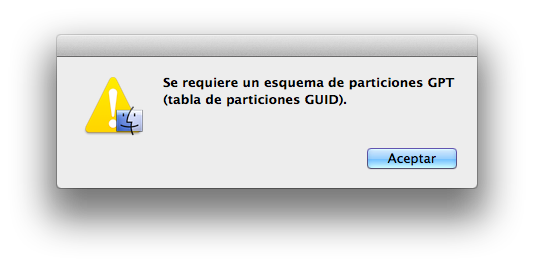

Existen 2 tipos de particiones: MBR y GPT, cada una tiene sus ventajas e inconvenientes por lo que dependiendo de qué sistema uses y los componentes de tu ordenador, puede que te convenga utilizar uno u otro.
Master Boot Record es un tipo de partición más antiguo, creado por IBM en 1983, al ser tan antiguo tiene la ventaja de ser compatible con la gran mayoría de SO, pero el inconveniente de que no soporta discos de más de 2TB
GUID Partition Table es un estándar más moderno que MBR, siendo así más rápido que este, también permite un número de tablas ilimitadas, sin embargo, los sistemas operativos marcan un límite, por ejemplo windows establece un máximo de 128 particiones.
Windows 10, permite el uso de ambos sistemas de particiones, por lo que podemos elegir el que más nos convenga dependiendo de nuestras necesidades.